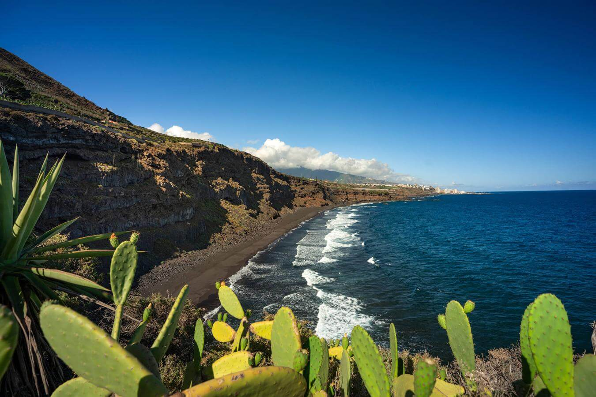
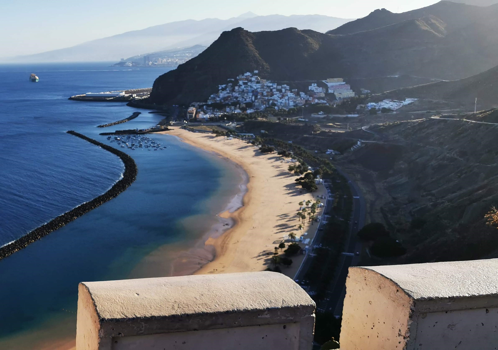
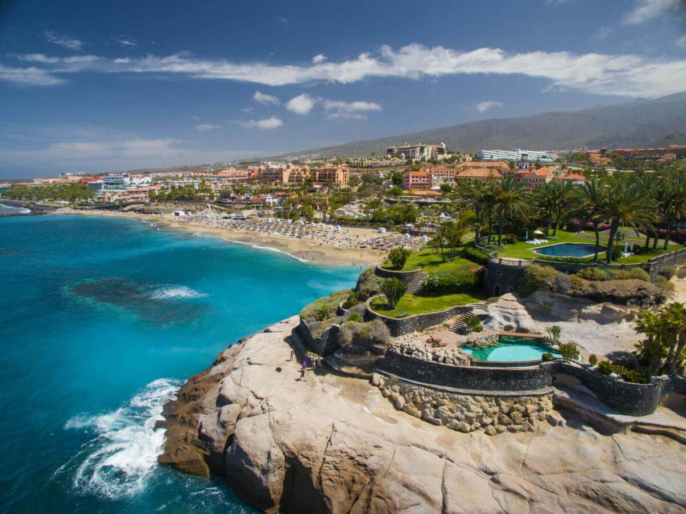
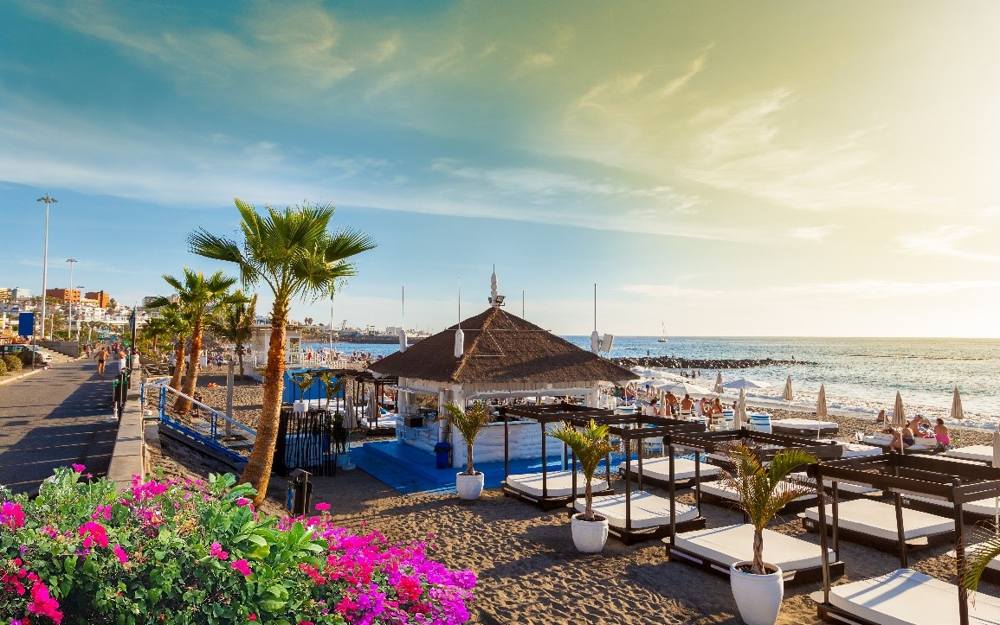
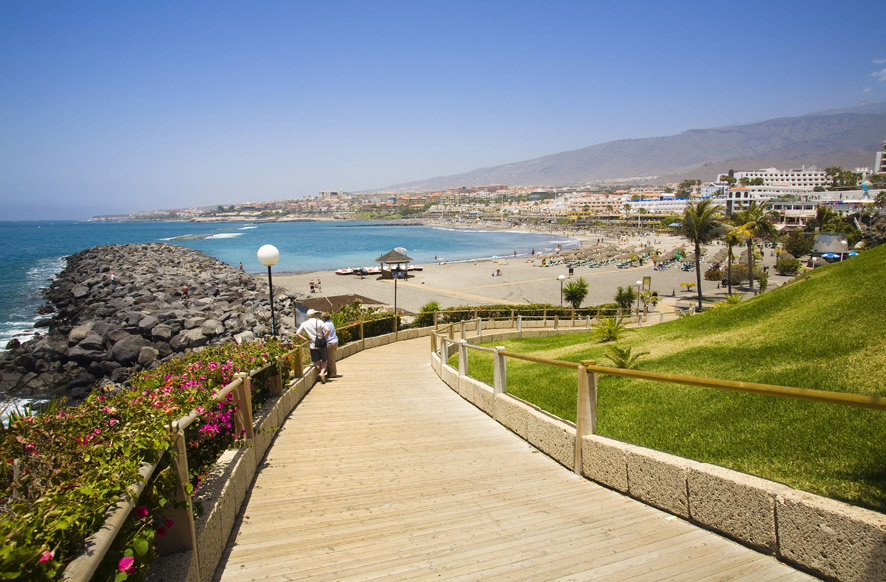
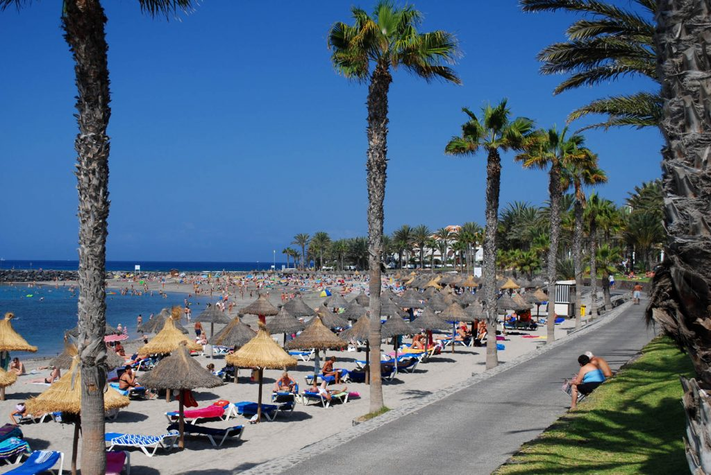
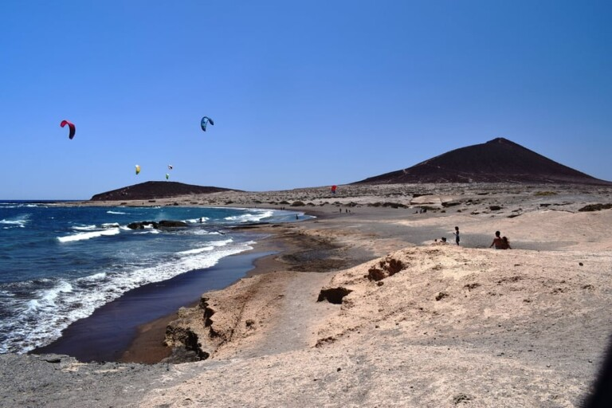
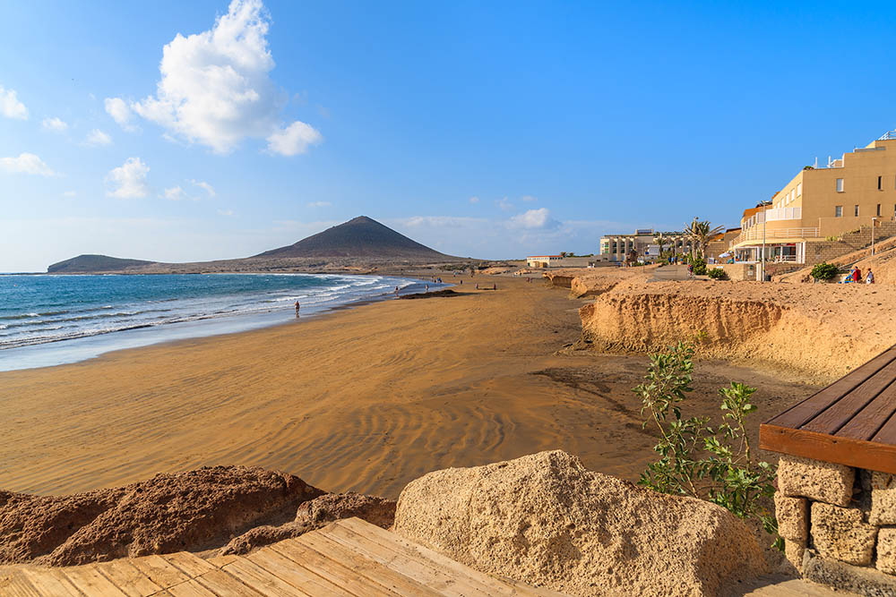

Bun venit pe pagina dedicata plajelor paradisiace din Tenerife!
Cu ape albastre turcoaz si nisip fin ca pudra, plajele acestei insule sunt o adevarata oaza de relaxare
si aventura. Fie ca sunteti in cautarea unei plaje linistite pentru a va rsfata cu o carte buna si o
bautura racoritoare, sau sunteti gata de activitati pline de adrenalina precum surfing sau snorkeling,
tenerife are ceva special pentru fiecare vizitator. In aceasta pagina, va invitam sa descoperiti
bijuteriile ascunse ale litoralului Tenerife, sa va inspirati pentru urmatoarea aventura si sa va
pregatiti pentru un concediu de neuitat sub soarele Canarelor
In general, plajele din Tenerife pot fi impartite in mai multe categorii, in functie de caracteristicile lor
distincte
1. Plaje de nisip negru vulcanic: Aceste plaje sunt caracteristice insulelor Canare
si sunt create de eroziunea rocilor vulcanice. Sunt intalnite in special in partea nordica si estica a insulei.
2. Plaje de nisipuri auri sau albe: Acestea sunt mai frecvente in partea sudica a
insulei si sunt adesea create prin inportul de nisip din Sahara sau din alte locatii.
3. Plajele cu facilitati turistice: Aceste plaje sunt de obicei situate in zonele
turistice si ofera
o gama larga de facilitati, cu ar fi sezlonguri, umbrele, sporturi nautice, baruri si restaurante
4. Plajele linistite si izolate: Tenerife are si plaje mai putin aglomerate si mai
izolate, ideale
pentru cei care cauta liniste si relaxare departe de multime.
5. Plaje pentru surf si sporturi nautice: Anumite plaje din Tenerife sunt
recunoscute
pentru
conditiile lor excelente pentru surf, windsurf, kitesurfing si alte sporturi nautice.
6. Plaje protejate si naturale: Exista si plaje protejate care sunt parte a
rezervatiilor naturale
sau a parcurilor nationale, unde se pot observa flora si fauna locala intr-un mediu natural si
conservat
Plaje de nisip negru vulcanic
1. Playa Jardín este o plajă urbană cu nisip negru împărțită în
trei secțiuni, plaja Castillo,
plaja Charcón și plaja Punta Brava. Există un dig lateral pentru a proteja scăldatorii de valurile
înalte, dar există încă zone deschise pentru cei care doresc să facă surf. Promenada leagă plaja de
grădini, locuri de joacă pentru copii, terase și cantine și o scenă în care au loc frecvent concerte. În
plus, există închiriere de șezlonguri și umbrele de soare, dușuri, vestiare și acces pentru persoanele
cu mobilitate redusă.
2. Playa El Bollullo este o plajă naturală înconjurată de stânci
dramatice. Mulți o consideră cea
mai frumoasă plajă din Tenerife. Ei simt că le dă Las Teresitas o alergare pentru banii ei ca fiind cea
mai frumoasă plajă din Tenerife.
Plaja este formată din nisip de lavă întunecat, dar fin. Apa este limpede, iar nuanța turcoaz este
deosebit de definită când este văzută de sus. Uneori sunt valuri mari și nu există salvamar, așa că
aveți grijă la valuri și curenți.
Puteți ajunge la plaja El Bollullo fie cu mașina, fie mergând pe calea de coastă din Puerto de la Cruz,
care se află la 30-35 de minute de mers pe jos. În afară de o cafenea pe plajă, nu există facilități.
3. Playa Los Patos
este situată chiar între plaja El Bollullo și plaja El Ancón. Este de fapt lângă plaja El Ancón și este
separată de aceasta doar printr-o proeminență a insulei care se duce în mare, numită Punta del Ancón.
Dacă te oprești în această zonă cu privirea spre mare, vei găsi plaja Los Patos în stânga ta și plaja El
Ancón în dreapta.
Plaja Los Patos este ceva mai mare decât plaja El Ancón și mult mai lungă decât plaja Bollullo, are
aproximativ 630 de metri lungime.
Los Patos, are o mare parte din lungime alcătuită din nisip negru și alte zone cu mai multe alei și
pietre. Ideal este să te așezi în zona nisipoasă unde vei fi mai confortabil și scăldatul va fi mai
sigur deoarece sunt mai puține pietre în apă.


4. Playa La Arena
În inima zonei urbane a micului centru turistic Puerto de Santiago se află plaja La Arena. Situat pe
coasta de vest a insulei Tenerife, nisipul său negru nu numai că contrastează frumos cu spuma albă a
țărmului, ci și absorbi mai ușor lumina soarelui, făcându-l o plajă caldă care asigură o temperatură
plăcută pe tot parcursul anului. Iar rocile vulcanice de pe flancuri sunt perfecte pentru snorkeling sau
scufundări libere și pentru a-i descoperi fundurile pline de viață marină.
Plaje de nisipuri auri sau albe
1. Playa de las Teresitas Plaja Las Teresitas este situată în
nord-estul insulei Tenerife, aproape
de
centrul orașului Santa Cruz. Lungimea de aproximativ un kilometru și jumătate, plaja are un dig care o
ferește de curenți și seamănă cu o piscină datorită liniștii apelor sale. Cei mici se vor putea juca pe
mal in deplina siguranta sau vor invata sa inoate impreuna cu parintii profitand de suprafetele mari in
care pot sta in picioare.


2. Playa del DuqueEste una dintre plajele preferate de iubitorii
de soare și relaxare, cu tot
confortul. Plaja Duque are steagul albastru distinctiv, care este o garanție a calității în starea apei
și în toate serviciile sale.
Situată în zona turistică a Costa Adeje, în fața unora dintre cele mai exclusiviste unități hoteliere de
pe Insulă, această plajă cu nisip gri este mărginită de o promenadă de coastă care face legătura cu mai
mult de opt plaje.
Puteți accesa foarte ușor cu mașina și veți găsi multe restaurante și magazine exclusiviste în zona
înconjurătoare. Chiar pe plaja aveti la dispozitie un serviciu de sezlong si umbrele, parcare,
restaurante, baruri, dusuri, vestiare, bai si telefon.


3. Playa de las Vistas
Este o plaja foarte aproape de Plaja Los Cristianos, doar aproximativ 150 de metri le despart si te poti
plimba de la unul la altul de-a lungul promenadei.
Plaja Las Vistas este considerată a fi o plajă mai turistică deoarece este înconjurată de apartamente și
hoteluri, în timp ce Los Cristianos este considerată mai mult plaja orașului, deși realitatea este că
ambele plaje sunt extrem de turistice și cu un grad mare de ocupare aproape tot timpul anului. .
Plaja Las Vistas are nisip auriu și poți alege între a te întinde pe nisip pentru a face plajă și a te
relaxa, sau dacă preferi poți închiria un hamac și o umbrelă, deoarece plaja este plină de zone de
închiriere de hamace.
Plaja are și plase de volei, așa că știi, fă puțină mișcare dacă ai chef.
La fel ca și plaja Los Cristianos, Las Vistas se caracterizează prin faptul că este o plajă cu ape
calme, ideală pentru a merge cu copiii și în orice moment al anului, întrucât pe versantul sudic al
insulei Tenerife vremea este de obicei bună pe tot parcursul anului. . Plaja are un dig care o
protejează și minimizează valurile.
Plaja Las Vistas este una dintre cele douăsprezece plaje din Tenerife adaptate pentru persoanele cu
dizabilități care folosesc scaunul cu rotile, motiv pentru care este definită drept „Plajă accesibilă”
de către Tenerife Cabildo, cu parcare rezervată, dușuri, rampe și pasarele de acces.
Pe plaja vei gasi un indicator cu cateva interdictii: cainii sunt interzisi, aruncarea mucurilor de
tigara in nisip, folosirea echipamentelor muzicale, campingul...
Pe promenada, Paseo Las Vistas, gasesti tarabe care vand bauturi, cateva cafenele si restaurante, un
McDonald's, daca ai chef sa bei sau sa mananci ceva.
Foarte aproape de plajă se află parcarea din zona portului maritim și este probabil unul dintre cele mai
bune locuri de parcare pentru a merge la plajă, dar rețineți că este o parcare cu plată. De asemenea,
puteți să vă plimbați pe străzile din apropiere și să căutați locuri de parcare, ceea ce va dura mai
mult timp. Uneori este mai bine să parcați puțin mai departe și să mergeți pe jos până la plajă.


4. Playa de Fañabé este situată în Costa Adeje, în sudul insulei
Tenerife, și are diferite
servicii care o fac o plajă ideală pentru întreaga familie. Totul este conceput pentru confortul
adulților și copiilor, de la accesul adaptat pentru scaune pentru copii până la restaurantele de pe
bulevardul său maritim cu acces direct la plajă. De asemenea, are o echipă de salvamari care asigură
siguranța scălătorilor pe tot parcursul anului.


5. Playa El Camisón situată în municipiul Arona, la câteva
minute de mers pe jos de plaja Las
Vistas, este o plajă cu nisip auriu care este protejată de valuri datorită a două perete. Acest lucru
face ca condițiile de scăldat să fie întotdeauna optime, făcându-l locul ideal pentru familii și
turiști.
Ai toate serviciile la care te poti astepta de la o plaja situata intr-un centru turistic. În plus, vă
puteți bucura de o plimbare plăcută prin împrejurimile sale cu numeroase restaurante și magazine. Există
o atmosferă cosmopolită cu o gamă largă de activități de agrement în timpul zilei și nopții.


Plaje excelente pentru surf si alte sporturi nautice
1. Playa El Médano este una dintre cele mai fermecătoare plaje
din sudul insulei Tenerife,
indiferent dacă sunteți pasionat de sporturile nautice sau doriți să vă bucurați de o zi fantastică cu
familia. Plaja are distincția Steagul Albastru, care garantează servicii de înaltă calitate și condiții
optime de apă pentru scăldat.
Plaja El Médano, situată în municipiul Granadilla de Abona, se remarcă prin frumusețea nisipului său fin
și gri și prin priveliștea maiestuoasă a conului vulcanic Montaña Roja.
Zona cea mai apropiată de oraș este cea mai familiară și cu cele mai puține valuri. Pe măsură ce mergi
de-a lungul promenadei vei găsi magazine de surf, restaurante și cafenele, într-o atmosferă foarte
cosmopolită.
Zona cea mai îndepărtată de oraș este ideală pentru windsurfing și kitesurfing. Pe această plajă se
desfășoară de obicei campionate de renume mondial, cum ar fi Campionatele Mondiale de Windsurfing și
Kitesurfing.


2. Playa de Las Américas Într-una dintre cele mai animate zone
din Arona, în sudul insulei
Tenerife, se află plaja Las Américas, o plajă cu nisip auriu lungă de jumătate de kilometru. Este o
plajă foarte completă, care dispune de tot felul de servicii: închiriere de hamace și umbrele, dușuri,
parcare, acces pentru persoane cu dizabilități, salvamari, acces cu mijloacele de transport în comun...
În plus, plăcutul bulevard maritim care o înconjoară este plin. de magazine si restaurante.si face
legatura cu alte zone de baie din apropiere.
3. Playa del Socorro
este una dintre plajele din Tenerife premiate cu steag albastru, deci dispune de toate serviciile
necesare precum dusuri, puncte de supraveghere, salvari si salvamari, toalete, restaurante si baruri pe
plaja, precum si o calitate sanitara.apa de baie excelenta.
Plaja are aproximativ 230 de metri lungime si dispune de spatii mari de parcare, ceea ce face ca este
foarte convenabil sa mergi la aceasta plaja, atat pentru usurinta in parcare (mai putin vara)
Plaja are un snack bar, o zonă de divertisment pentru tineri numită „El Puntito del Socorro”, unde vă
pot oferi jocuri și lecturi.
Pe această plajă este obișnuit să vezi grupuri de oameni cu lecții de surfing și chiar și vara se vede
de obicei un film pe timp de noapte.